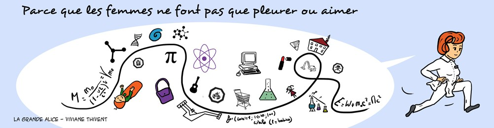

Actrice ou Scientifique ?
Voici dix femmes canons. Certaines sont de grandes chercheuses, d'autres
incarnent des scientifiques au cinéma ou sur le petit écran.
Saurez-vous reconnaître qui est qui ?
Voir mon score